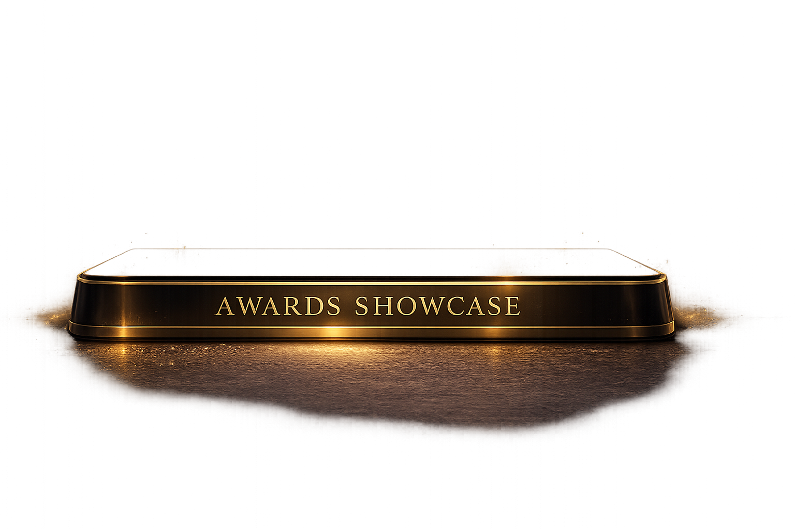

IEEE STEM Champion 2023
IEEE Education Activities
Recognized as one of 26 IEEE STEM Champions selected globally in 2023 for contributions to pre-university STEM outreach.
IEEE Education Activities
Recognized as one of 26 IEEE STEM Champions selected globally in 2023 for contributions to pre-university STEM outreach.
IEEE Sri Lanka Section
Awarded in the Student Category for exemplary contributions at sectional, regional, and global IEEE levels.
University of Peradeniya
Awarded for the best undergraduate project in Electrical and Electronic Engineering.
Sri Lanka Inventors Commission
Won a silver medal in the national invention and innovation competition for a smart blind spot monitoring project.
University of Peradeniya
Awarded for the Vision-LiDAR fusion based deep learning framework for autonomous navigation.
3rd Business and ICT International Research Conference
Recognized for research on improving glycemic load estimation from nutritional composition data using machine learning.
3rd Business and ICT International Research Conference
Awarded for presenting PredictGL-related research on AI-driven glycemic load prediction.
Institution of Engineers, Sri Lanka
Awarded for the best final-year undergraduate project in Electrical and Electronic Engineering among Sri Lankan universities.
Robotics and Automation Project Recognition
Recognized as the best final-year Robotics and Automation project.
IEEE R10 Ethics Committee
Recognized for commitment to ethical standards in technology and contributions that helped elevate IEEE Sri Lanka Section to a top 5 section in the region.
IEEE MGA
Selected for the IEEE Volunteer Leadership Training program representing Sri Lanka Section and successfully graduated from the program.
IEEE Sri Lanka Section
Recognized the Sihinayata Peraman project for career guidance and community impact.
IEEE R10 HTA
The team led by Lakshan won second place in a contest focused on humanitarian impact, creativity, and live project presentation.
Education Activities, IEEE Sri Lanka Section
Recognized for Sinhala-language technology content creation through IEEE Tech Narrator.
Education Activities, IEEE Sri Lanka Section
Recognized for popular Sinhala-language technology content creation through IEEE Tech Narrator.
Project Blue Marble
Recognized as the Best iGV Project for the Blue Marble nature conservation project.
University of Peradeniya
Placed 1st in Baseball and 2nd in Tennis at Freshers Meet.
Honors and recognition for academic excellence, research impact, leadership, professional contributions, and community service.
Awards and recognitions for research excellence, publications, presentations, and academic achievements.
Recognitions for leadership roles, professional service, and contributions to IEEE and professional communities.
Appreciation for volunteer service, community impact, and initiatives that create positive change.
Other noteworthy recognitions from organizations, events, and special contributions.

Every recognition inspires me to continue contributing to academia, research, professional communities, and society.